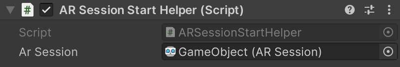

ARSessionStartHelper
ARSession コンポーネントのヘルパークラスです。端末内の AR システムのインストール確認と AR セッション開始を自動管理します。
Important
利用の際はソースコード内の #define 定義を有効にしてください。
namespace GarageKit.ARFoundationExtention
[RequireComponent(typeof(ARSession))]
public class ARSessionStartHelper : MonoBehaviour
Inheritance
ARSessionStartHelper -> MonoBehaviour
Inspector
Properties
| member | type | description |
|---|---|---|
| arSession | ARSession | ARSession の参照 |
Methods
AR 機能の初期化失敗時コールバック
public Action OnFailARSession
AR ライブラリのインストールリクエスト時コールバック(ARCore)
public Action OnRequestARLibInstall
AR 機能の初期化完了コールバック
public Action OnReadyAR